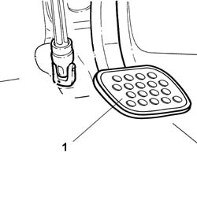
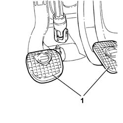

3330B30 RUBBER PEDAL COVER (one) - Replace
- Path
- Procedures > 33 BRAKES > 3330 HYDRAULIC BRAKING SYSTEM > 3330B PEDAL UNIT > 3330B30 RUBBER PEDAL COVER (one) - Replace
- Kind
- repair procedure (removal / refitting; the operation number is the code)
- Applies to
- engines: 2.0 TB, 2.4 20V, 3.0 V6, 3.2 V6, 2.4 JTD 10V; all production periods
- Interactive page
- https://sloeber94.github.io/elrnDB-lThss/en/#/78594
Applies to: engines: 3.0 V6, 3.2 V6; all production periods
 Removing
Removing
 Refitting
Refitting1. Remove the rubber pedal cover from the brake pedal.

Applies to: engines: 3.0 V6, 3.2 V6; all production periods
Refitting
Removing- Fit the rubber pedal cover on the brake pedal.
Applies to: engines: 2.0 TB, 2.4 20V, 2.4 JTD 10V; all production periods
Removing
Refitting1. Remove the rubber pedal covers from the brake and clutch pedals.

Applies to: engines: 2.0 TB, 2.4 20V, 2.4 JTD 10V; all production periods
Refitting
Removing- Fit the rubber pedal covers on the brake and clutch pedals.